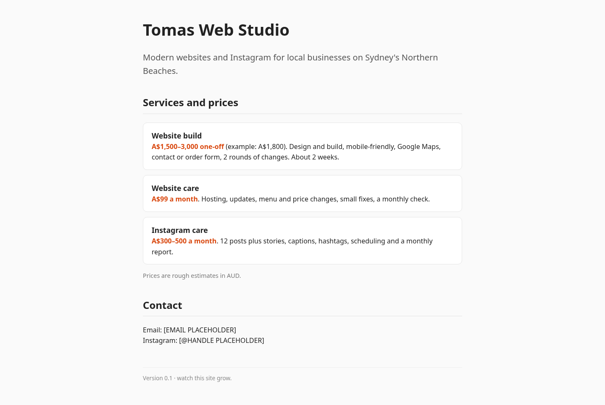

🏆 Results
Real-world proof.
Real work, shared with everyone cheering him on. Every day Tomas logs what he built, and his business site grows version by version.
Build log
Day by day
Fills in automatically as Tomas logs each day.
His business site
Tomas Web Studio, version by version
v0.1 · Fri 16 Oct 2026 · today
The starting point
A deliberately plain single page: studio name, one-line offer, services, prices and a contact placeholder.

v1.0 · Fri 23 Oct · Week 1
Homepage online
Screenshot coming after the first show-and-tell.
v2.0 · Fri 30 Oct · Week 2
Full site working
Screenshot coming after the second show-and-tell.
v3.0 · Fri 6 Nov · Launch Day
Live on his own domain
Screenshot coming on Launch Day.
Skills earned
Practised so far
0
of 10 hard skills
0
of 9 soft skills
0
of 10 life skills